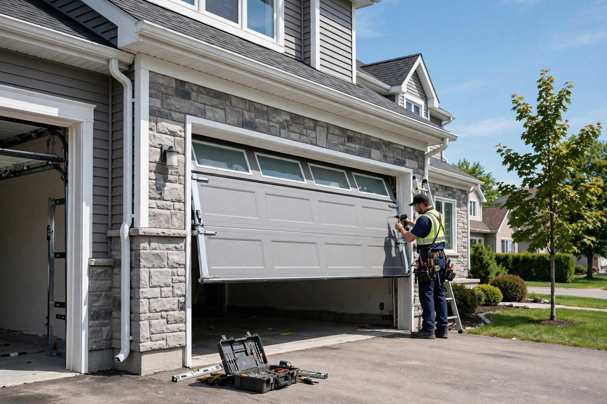
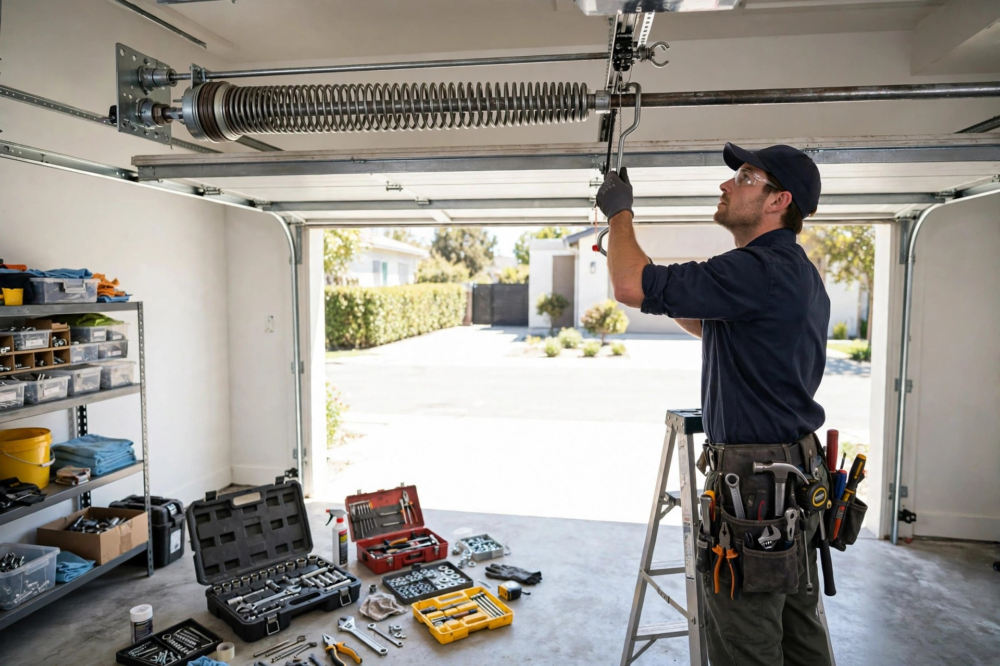
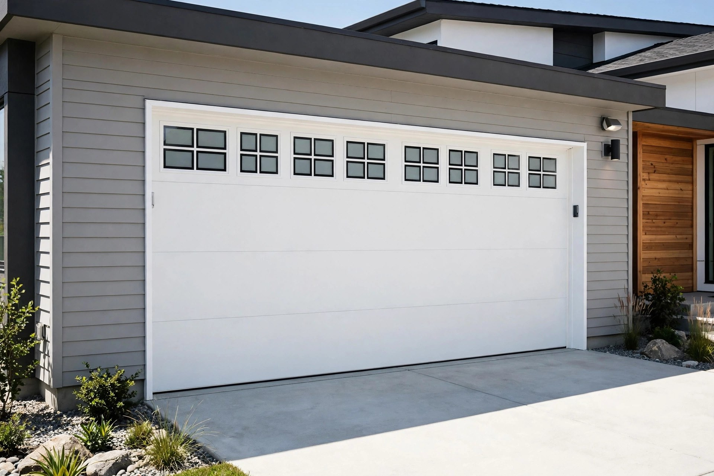
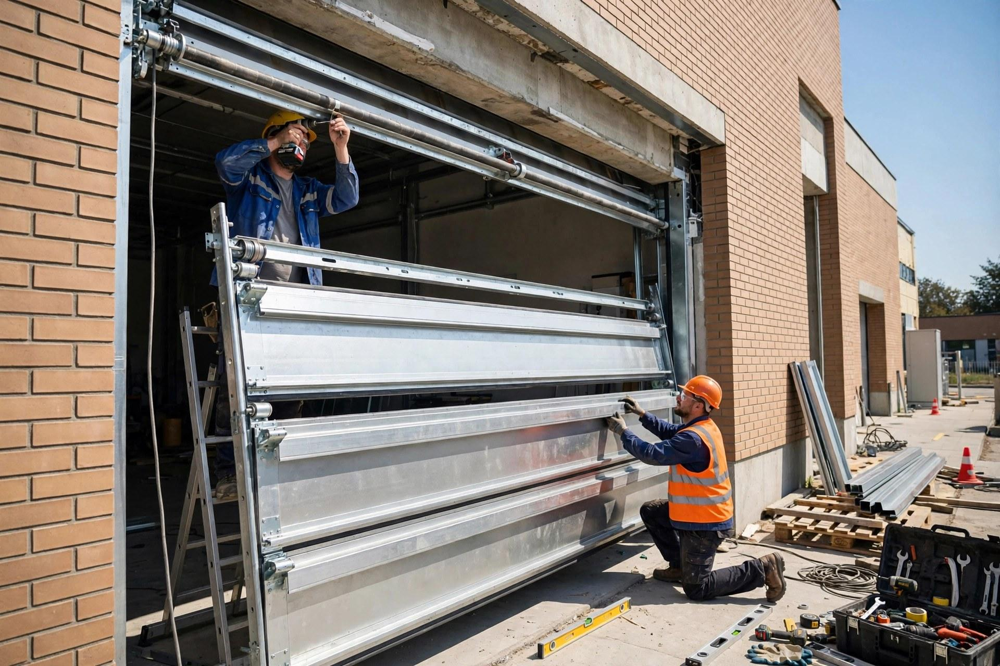

Vente de portes de garage
Portes résidentielles, commerciales, industrielles et agricoles — un modèle pour chaque besoin.

Granby, Québec · Entreprise familiale depuis 1977
Vente, installation, réparation et entretien de portes de garage — résidentiel, commercial, industriel et agricole.
Ce que nous faisons
Portes résidentielles, commerciales, industrielles et agricoles — un modèle pour chaque besoin.
Pose soignée par une équipe d'expérience — du résidentiel aux grands bâtiments industriels.
Ressorts, câbles, rails et panneaux — on remet votre porte en état rapidement.
Vente, installation et dépannage d'ouvre-portes électriques — réglage complet inclus.
Pièces et accessoires pour votre porte de garage — toutes marques, conseils d'experts.
Remplacement de vitres thermos et moustiquaires, portes et fenêtres sur mesure.

Pourquoi nous choisir
Depuis 1977, Hudon & Fils dessert Granby et la région avec une promesse simple : la bonne porte, bien installée, et un service qui répond présent quand ça compte.
Notre travail


Ils en parlent
Bon à savoir
Oui — on répare et entretient les portes de garage de toutes marques, et on tient les pièces pour les remettre en état.
Oui — on vend, installe et dépanne les ouvre-portes (moteurs), avec le réglage complet de votre porte.
Oui — notre expertise couvre le résidentiel, le commercial, l'industriel et l'agricole.
Lundi au vendredi de 8 h à 17 h, samedi de 8 h à 12 h. Fermé le dimanche.
Venez nous voir